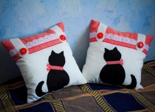
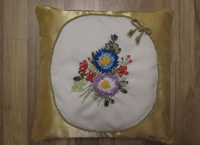

-
Декоративные подушки
- 
-
Подушка "Кошечка"
Недаром существует высказывание: "Если у вас есть кошка, вы возвращаетесь не в дом, а домой". И это поистине так! Что может быть приятнее мирного мурлыканья Вашего пушистого питомца, свернувшегося тёплым клубочком у Вас на коленях? Ну а наличие дома декоративных вещиц с "кошачьей" тематикой несомненно привнесут в Ваш дом эту непоторимую нотку уюта и тепла. Проверено!;)
Материал: хлопок, лён, атласная лента, кружево.
Наполнитель: холлофайбер.
Размер: 30×30 см.Цена: 1500 р.
Акция! При покупке 2-х подушек, Вы получаете скидку 15%!
- 
-
Подушка "Букет"
Очаровательная атласная подушечка с цветочной композицией, вышитой лентами. Прекрасно дополнит интерьер как Вашей спальни, так и гостиной комнаты. Как же приятно, когда некоторые вещицы в доме напоминают о прекрасных летних днях и, пусть ненадолго, но возвращают нас в летний бабушкин садик с благоухающими георгинами, пионами, астрами...
Материал: атлас, хлопок, атласная лента, шёлковый шнур.
Наполнитель: холлофайбер.
Размер: 38×38 см.Цена: 1800 р.
-

-
"Кошка и птичка"
Милая подушечка с аппликацией "Кошечка с птичкой", обрамлённая белоснежным кружевом, органично впишется в интерьер любой спальни, и, в особенности - комнаты девочки. Нежная и с непринуждённым сюжетом, мягкая и лёгкая, она всегда будет радовать глаз Вашей маленькой Принцессы!:)
Материал: хлопок, лён, атласная лента, кружево.
Наполнитель: холлофайбер.
Размер: 35×35 см.Цена: 1300 р.
-

-
"Бабочки"
Романтичная атласная подушечка с бабочками - ещё одно напоминание о лете, тёплых дней которого нам будет так не хватать длинной, снежной, морозной зимой... Позаботьтесь о том, чтобы зима всегда оставалась лишь за окном, а в Вашем доме светило ласковое солнышко и порхали с цветка на цветок эти чудесные бабочки!
Материал: атлас, атласная лента, капроновая лента.
Наполнитель: холлофайбер.
Размер: 35×35 см.Цена: 1500 р.